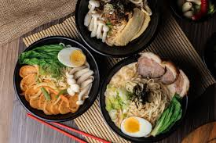

Ramen japones

Descripcion
El Ramen es un plato con una preparación que lleva bastante tiempo y sus ingredientes
no son fáciles de conseguir, así que lo normal es tomarlo en algún restaurante especializado,
y ¡ojo! encontrar una buena calidad tampoco es sencillo. Hay innumerables recetas sobre los
ingredientes que acompañan los fideos en esta sopa. Hay ramen de carne, de pescado, marisco o
totalmente vegetarianos, aunque lo habitual es combinar un poco de todo
Ingredientes
- 4 paquetes de fideos de ramen secos
- 1 cebolla grande picada
- 1 trozo de jengibre fresco rallado
- 8 tazas de caldo de pollo o de cerdo
- 1/4 taza de salsa de soja
- 1 cucharadita de harina
- 4 huevos cocidos
- 4 tazas de verduras frescas picadas
- 1 taza de carne de cerdo cocida y desmenuzada
Como preparar el ramen
- Separá la carne de la costilla del hueso.
Poné el hueso en una olla con agua y hervilo hasta que cambie de color. Esto ayuda a limpiar impurezas.
Retiralo, enjuagalo con agua fría y reservá.
- En una olla grande, colocá el hueso de la costilla, el puerro (menos una hoja que reservamos), 3 dientes de ajo machacados, 3 rodajas de jengibre, la cebolla y la zanahoria.
Cubrí con agua y agregá sal.
Cociná a fuego lento durante 1 hora. Este paso es clave para lograr un caldo lleno de sabor.
- En una sartén caliente, dorá la costilla de cerdo (la parte sin hueso) de ambos lados.
Una vez dorada, agregala al caldo y cociná 10 minutos más.
- Herví agua con un chorro de vinagre.
Agregá los huevos y cocinalos durante 6 minutos exactos. ¡Ni un minuto más!
Enfrialos en agua con hielo, pelalos con cuidado y reservá.
- En una olla pequeña, combiná la salsa de soja, el mirín, el azúcar y el sake.
Agregá el diente de ajo machacado, la rodaja de jengibre y la hoja de puerro reservada.
Cociná a fuego lento hasta que rompa hervor y apagá el fuego.
- Colocá la costilla de cerdo dorada y los huevos pelados en la marinada.
Dejá reposar al menos 30 minutos (si podés, dejalos más tiempo para intensificar el sabor)
- Prepará los fideos según las instrucciones del paquete.
Escurrilos y reservá.
- En un bowl profundo, colocá 3-4 cucharadas de la marinada de soja como base.
Poné una porción de fideos en el centro y verté el caldo caliente hasta llenar la mitad del bowl.
En un costado, colocá la carne cortada en tiras finas. En el otro, el huevo partido al medio (con la yema líquida, ¡gloria pura!).
Terminá con cebolla de verdeo cortada en chanfle (porque sí, el chanfle es arte).
Atras